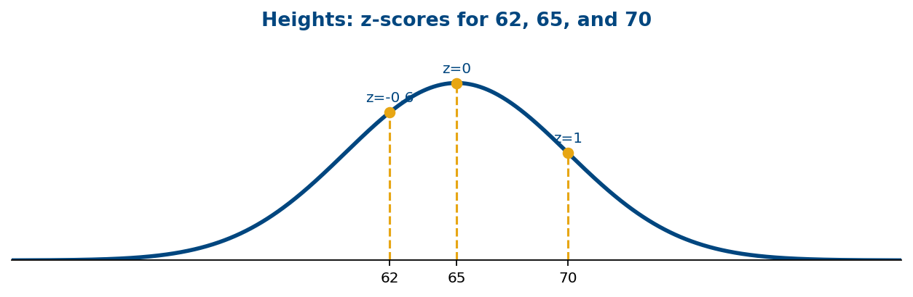
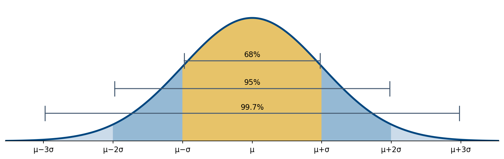
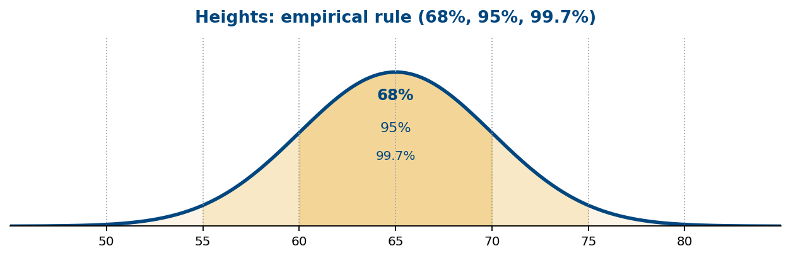
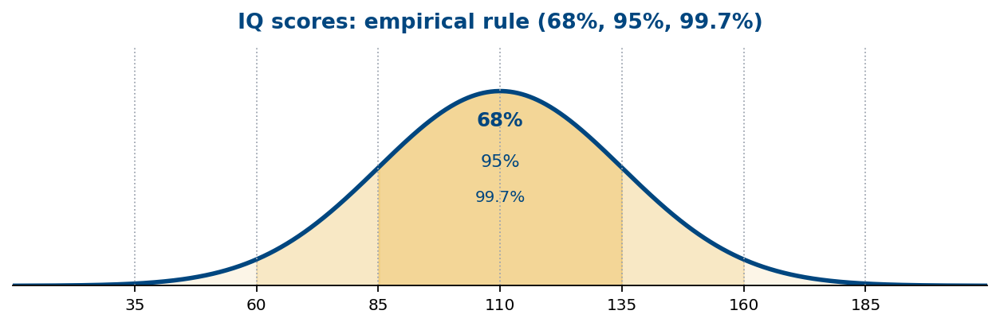
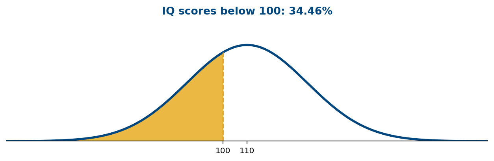
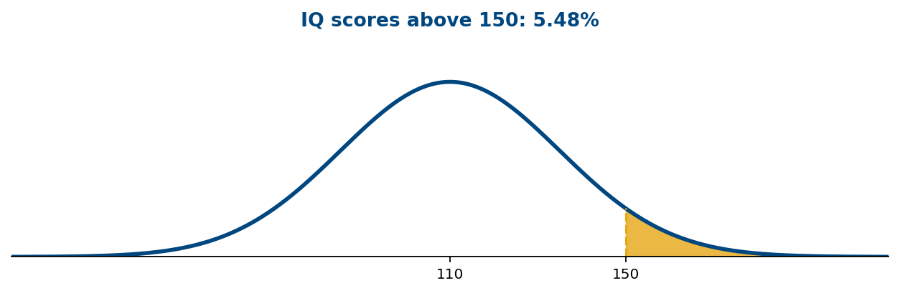
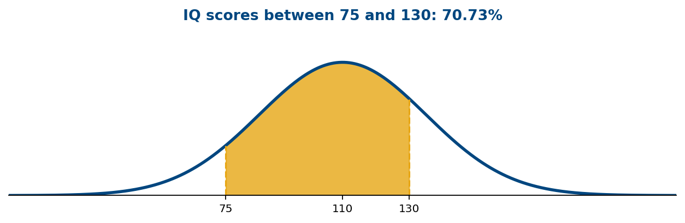
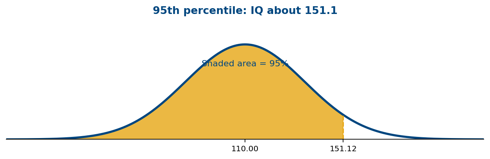
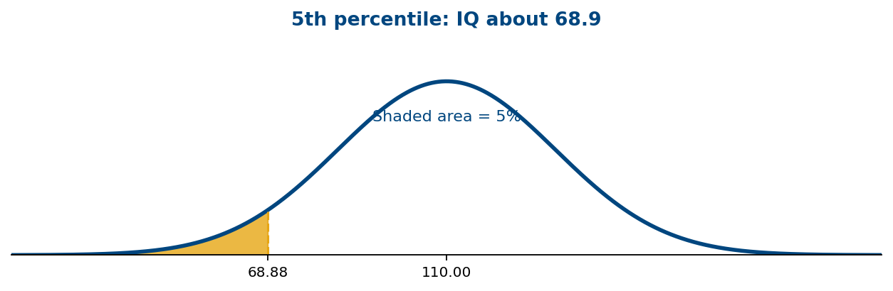
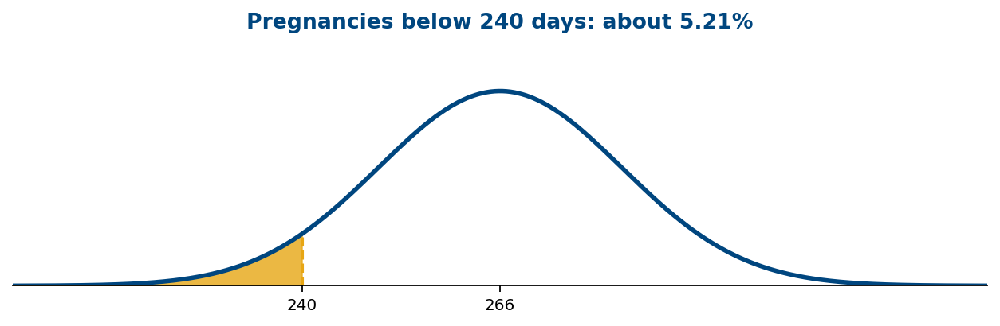

Density Curve – a smooth curve which is the most common way of representing a population
Statistical software can replace the separate bars of a histogram with a smooth curve (Density Curve) that represents the overall shape of a distribution.
The shape of a density curve can be determined in the same way as was done with histograms.
Density curves are useful in determining what proportion, percentage, or probability of the population falls within an interval (proportion, percentage, and probability is the same value). Notice this is different than in the discrete case. For a discrete random variable we assign probability to points and in a continuous random variable we assign probability to intervals.
We set up these curves so that the area under the curve represents the proportion, percentage, or probability of observations
Therefore, in order to be a density curve and represent a continuous probability distribution, the curve must satisfy certain properties. This is similar to the properties of a valid discrete probability distribution.
The curve must be continuous (it represents a continuous random variable)
The curve must never fall below the x-axis (probability can never be less than 0)
The total area for any density curve is 1 (probability can never be greater than 1 and the total probability in any distribution must be 1)
2. Normal Distribution
If the density curve follows a normal distribution (Gaussian distribution) then it will be a bell-shaped curve. The normal distribution is characterized by μ (population mean) and σ (population standard deviation).
A normal distribution with μ = 0 and σ = 1 is called the standard normal distribution
z-score (standardized score) – denoted z, gives the number of standard deviations an observation is above or below the mean
Examples
If z = 1, then the observation is 1 standard deviation above the mean
If z = -2.37, then the observation is 2.37 standard deviations below the mean
These values are called standardized scores because they come from a standard normal distribution. These z-scores can be calculated with the formulas below:
\[z=\frac{x-\mu}{\sigma}\]
for a population
and
\[z=\frac{x-\bar{x}}{s}\]
for a sample
Example 1 (video solution)
Suppose the height of females is normally distributed with μ = 65 and σ = 5 . Find z-scores for the following:
1. 70
2. 65
3. 62

Example 1: shaded area or marked values on the normal distribution.Show worked solution
Step 1: Identify the distribution. The mean is μ = 65 inches and the standard deviation is σ = 5 inches.
Step 2: Use the population z-score formula. \(z=\frac{x-\mu}{\sigma}\).
Step 3: For x = 70. \(z=\frac{70-65}{5}=\frac55=1\). The height is 1 standard deviation above the mean.
Step 4: For x = 65. \(z=\frac{65-65}{5}=\frac05=0\). The height is exactly at the mean.
Step 5: For x = 62. \(z=\frac{62-65}{5}=\frac{-3}{5}=-0.60\). The height is 0.60 standard deviations below the mean.
Remember from section II. B. that a percentile represents the position of one measurement in comparison with all the other measurements. More specifically, it gives the percentage of observations below a given score. In the case of a density curve, it gives the percentage of the population (area under the curve) that falls below a given value.
We will use z-scores in order to find percentiles (which also represents proportions and probabilities). The big benefit of z-scores here is that we can transform any normal curve into a standard normal curve.
It is also of interest sometimes to find an observation given a percentile. You can do this with the z-score formula, but you will have to solve for x . It is easier to use the formula below which is just an algebraic manipulation of the z-score formula.
\[x=\mu+\sigma(z)\]
3. Finding Probability for a Normal Distribution
Empirical Rule (works for mound shaped distributions)
Mound shaped means the curve increases then decreases. The shape cannot be uniform or bimodal. It can be skewed or symmetric. The empirical rule comes from the normal distribution, so it gives correct percentages (not approximations) when dealing with a normal curve.
Approximately 68% of the data fall within 1 standard deviation of the mean
\[(\mu-\sigma,\ \mu+\sigma)\ \text{ for a population and }\ (\bar{x}-s,\ \bar{x}+s)\ \text{ for a sample}\]
Approximately 95% of the data fall within 2 standard deviations of the mean
\[(\mu-2\sigma,\ \mu+2\sigma)\ \text{ for a population and }\ (\bar{x}-2s,\ \bar{x}+2s)\ \text{ for a sample}\]
Approximately 99.7% of the data fall within 3 standard deviations of the mean
\[(\mu-3\sigma,\ \mu+3\sigma)\ \text{ for a population and }\ (\bar{x}-3s,\ \bar{x}+3s)\ \text{ for a sample}\]

Visual reference: the empirical rule on a normal curve.
Example 2 (video solution)
Suppose the height of females is normally distributed with μ = 65 and σ = 5 . Draw a graph for this distribution illustrating the empirical rule.

Example 2: shaded area or marked values on the normal distribution.Show worked solution
Step 1: Identify the center and spread. μ = 65 and σ = 5. Draw a symmetric bell-shaped curve centered at 65.
Step 2: Mark the standard-deviation values. \(\mu-3\sigma=50,\ \mu-2\sigma=55,\ \mu-\sigma=60,\ \mu=65,\ \mu+\sigma=70,\ \mu+2\sigma=75,\ \mu+3\sigma=80\).
Step 3: Label the intervals. About 68% lies between 60 and 70; about 95% lies between 55 and 75; about 99.7% lies between 50 and 80.
Step 4: Interpret the graph. The intervals are centered on 65, and the percentages describe areas under the curve, not the heights of the curve.
In order to work some of the examples in this section, you will need to use the standard normal table (z-table) which is located on the Unit III website. The table identifies a list of z-scores along with the corresponding percentiles, proportions, and probabilities.
Suppose that scores on an IQ test are normally distributed with μ = 110 and σ = 25 . Use this information for examples 3 – 8.
Example 3 (video solution)
What does the empirical rule tell you about this data?

Example 3: shaded area or marked values on the normal distribution.Show worked solution
Step 1: Identify the distribution. IQ scores have μ = 110 and σ = 25.
Step 2: Within one standard deviation. \(110-25=85\ \text{ and }\ 110+25=135\), so about 68% of scores lie between 85 and 135.
Step 3: Within two standard deviations. \(110-2(25)=60\ \text{ and }\ 110+2(25)=160\), so about 95% lie between 60 and 160.
Step 4: Within three standard deviations. \(110-3(25)=35\ \text{ and }\ 110+3(25)=185\), so about 99.7% lie between 35 and 185.
Example 4 (video solution)
What percentage of people scored lower than a 100 on the IQ test?

Example 4: shaded area or marked values on the normal distribution.Show worked solution
Step 1: Identify the requested area. We need the percentage below 100, so find the area to the left of 100.
Step 2: Convert to a z-score. \(z=\frac{100-110}{25}=\frac{-10}{25}=-0.40\).
Step 3: Look up the percentile. The standard normal table gives P(Z < −0.40) = 0.3446.
Step 4: Convert to a percentage. 0.3446 × 100 = 34.46%. About 34.46% of people score below 100.
Example 5 (video solution)
Find the probability a person would score higher than a 150 on the IQ test.

Example 5: shaded area or marked values on the normal distribution.Show worked solution
Step 1: Identify the requested area. We need the area above 150, to the right of the cutoff.
Step 2: Convert to a z-score. \(z=\frac{150-110}{25}=\frac{40}{25}=1.60\).
Step 3: Find the left-tail probability. The z-table gives P(Z < 1.60) = 0.9452.
Step 4: Use the complement. P(Z > 1.60) = 1 − 0.9452 = 0.0548, or 5.48%.
Example 6 (video solution)
Find the proportion of people who scored between a 75 and 130 on the IQ test.

Example 6: shaded area or marked values on the normal distribution.Show worked solution
Step 1: Identify the requested area. We need the area between 75 and 130.
Step 2: Standardize the lower bound. \(z_1=\frac{75-110}{25}=\frac{-35}{25}=-1.40\).
Step 3: Standardize the upper bound. \(z_2=\frac{130-110}{25}=\frac{20}{25}=0.80\).
Step 4: Look up both cumulative probabilities. P(Z < 0.80) = 0.7881 and P(Z < −1.40) = 0.0808.
Step 5: Subtract to find the interval. P(75 < X < 130) = 0.7881 − 0.0808 = 0.7073, or 70.73% (approximately 70.7%).
Example 7 (video solution)
If you score better than 95% of people on the IQ test, then what is your score?

Example 7: shaded area or marked values on the normal distribution.Show worked solution
Step 1: Translate the wording. Better than 95% means the 95th percentile: 95% of scores are below the cutoff.
Step 2: Find the percentile z-score. The z-table gives z ≈ 1.645 for a cumulative area of 0.95.
Step 3: Convert back to an IQ score. \(x=\mu+\sigma z=110+25(1.645)=151.125\).
Step 4: Interpret. A score of approximately 151.1 is at the 95th percentile.
Example 8 (video solution)
If 95% of people score better than you then what is your score?

Example 8: shaded area or marked values on the normal distribution.Show worked solution
Step 1: Translate the wording. If 95% score better than you, only 5% score below you. Find the 5th percentile.
Step 2: Find the percentile z-score. The lower-tail area of 0.05 corresponds to z ≈ −1.645.
Step 3: Convert back to an IQ score. \(x=\mu+\sigma z=110+25(-1.645)=68.875\).
Step 4: Interpret. A score of approximately 68.9 is at the 5th percentile.
Suppose that the length of pregnancies follows a normal distribution with μ = 266 and σ = 16 days. Use this information for examples 9 – 12.
Example 9 (video solution)
What percent of pregnancies last less than 240 days?

Example 9: shaded area or marked values on the normal distribution.Show worked solution
Step 1: Identify the distribution and area. Pregnancy length has μ = 266 days and σ = 16 days. We want the area below 240.